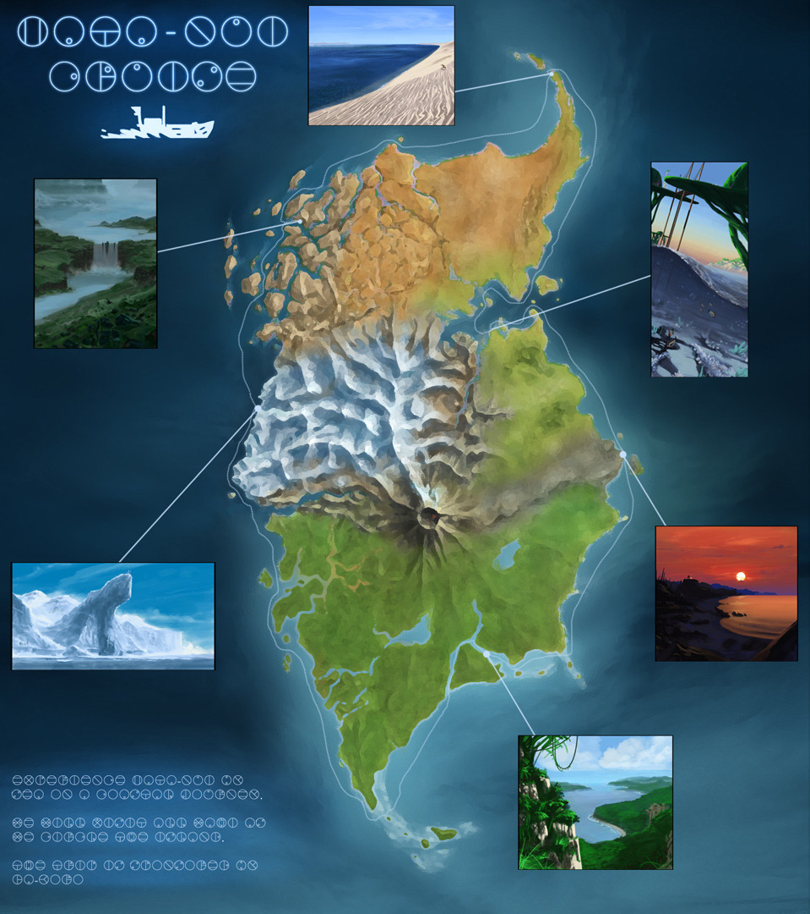

Mata Nui

Ga-Wahi; from sandy beaches to white cliffs
Ga-Wahi is the water region of the island. Consequently most of the region is submerged in a body of water called Naho Bay, or Gali's Bay. The Bay is surrounded by long beaches and towering steep cliffs behind them.
The village of Ga-Matoran - Ga-Koro - can be found at the Bay, floating on the water on top of large lily pads. The huts themselves are made of thick, seaweed-like material. Ga-Koro also houses Ga-Suva, a shrine dedicated to Toa Gali, as well as Ga-Kini, a temple dedicated to said Toa.

Ta-Wahi; lava rivers and molten magma
Ta-Wahi, the region of fire is home to the confident Ta-Matoran. The volcanic landscape is filled with lava falls and rivers of molten magma.

Ta-Koro, the village of Fire, can be found in the middle of a lake of lava called the Lake of Fire. On the outside, fortified walls and a retractable stone bridge make the village look like a fortress, with a Ta-Matoran defence force patrolling the perimeter and protecting the village against threats. Inside the walls the villagers live in huts made of cooled lava.
Ko-Wahi; icy drifts and mountains